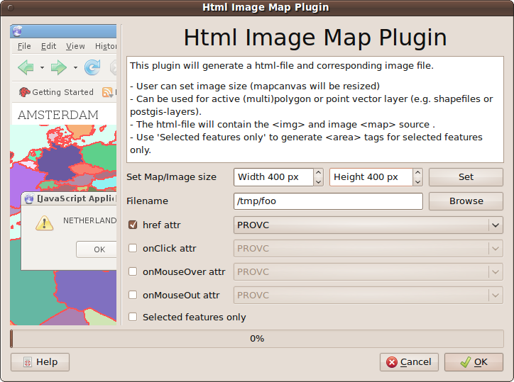

Html Image Map Plugin
Intro
With this plugin you can write an Image Map from current map.
The active polygon or point layer will be used to define the clickable area's in the html.
Optional change mapcanvas (image) size to preferred size.
The attribute values href, onClick and onMouseOver and onMouseOut are optional in area tags.
Instead of writing ALL polygons to area tags, it's also possible to make a selection and just use this selection polygons to generate the area-tags.
How
Load your data and symbolize all you layers
Make one line or point vector layer the active layer, by selecting it in the legend
Activate the plugin
Optional: change mapcanvas (image) size to preferred size.
Use the browse button to browse to a writable place on you filesystem where the html and png files will be written
Select which html/javascript attributes you want to have in the final html
Optional: select features, if you want only those features to be clickable (defaults to all features in window)
For the selected attributes, select the layer attributes you want to use

Dialog of Html Image Map Plugin
After pushing OK, the plugin will:
write an screendump of current mapwindow as [name].png
write an html file with some basic javascript and html for an image map:
<area shape="polygon" href="CROATIA" onClick="mapOnClick('CROATIA')" onMouseOver="mapOnMouseOver('ZAGREB')"
coords="306,135,307,135,308,135,309,135,310,136,309,136,308,136,308,135,306,135">
REMARK: version 0.4 and higher can handle layers which 'On The Fly Projection' enabled. BUT it can handle this only if your
QGIS version is 1.5 or above. As a workaround you can save the layer with 'On The Fly Projected' as a shape in your destination src,
load the shape (which is now in the right projection) and use that vector layer for the imagemap.
Version history
- 0.5.2 (10-2012): moving from svn to git, polygon -> poly html fix (thanks Kurt Trinko)
- 0.5.1 (11-2011): small renaming
- 0.5.0 (09-2010): implemented setting mapcanvas/images size (thanks Luuk Schaminee for idea)
- 0.5.0 (09-2010): implemented setting mapcanvas/images size (thanks Luuk Schaminee for idea)
- 0.4.4 (05-2010): bugfix for on the fly projected projects (thanks Ivan Mincik)
- 0.4.4 (05-2010): bugfix for on the fly projected projects (thanks Ivan Mincik)
- 0.4.3 (05-2010): bugfix progressbar.setProperty issue in debian (thanks Ivan Mincik)
- 0.4.2 (05-2010): bugfix for 'version'-exception
- 0.4.1 (05-2010): fix for #1753 remove qt3 stuff
- 0.4.0 (04-2010): added this Help, added onMouseOut attribute, now working for 'On The Fly Projected' layers (thanks Tim Barmann for finding and providing the right testdata)
- 0.3.8 (10-2009): bugfix, rasterlayer as active layer raised exceptions, fix for Window IO error (thanks Patrick Kaisers)
- 0.3.7 (??-2009): bugfix, working for 1.0
- 0.3.1 (11-2008): bugfix, working for downloadable preview2 of 1.0
- 0.3.0 (09-2008): upgrade to new plugin api, needed for 1.0. Now working for POINTS als (10x10buffer area) :-)
- 0.2.0 (01-2008): fix for bad imagename (without path) in htmlfile, fix for not working with postgis layers, other menu item. Download this one for versions before version 1.0 of qgis DOWNLOAD 0.2
- 0.1.0 (09-2007): initial version
Tips, comments, questions:
richard at-sign duif.net (Richard Duivenvoorde)